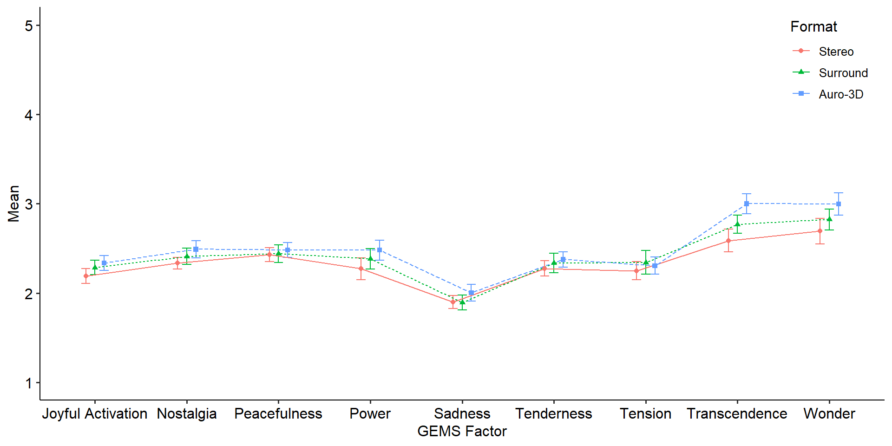
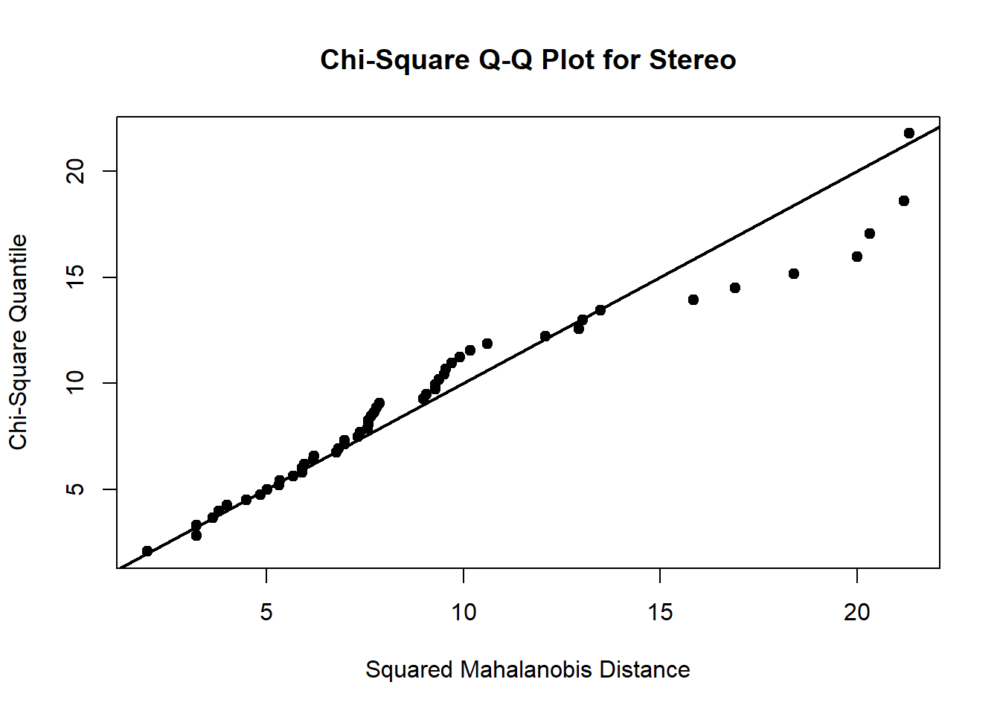
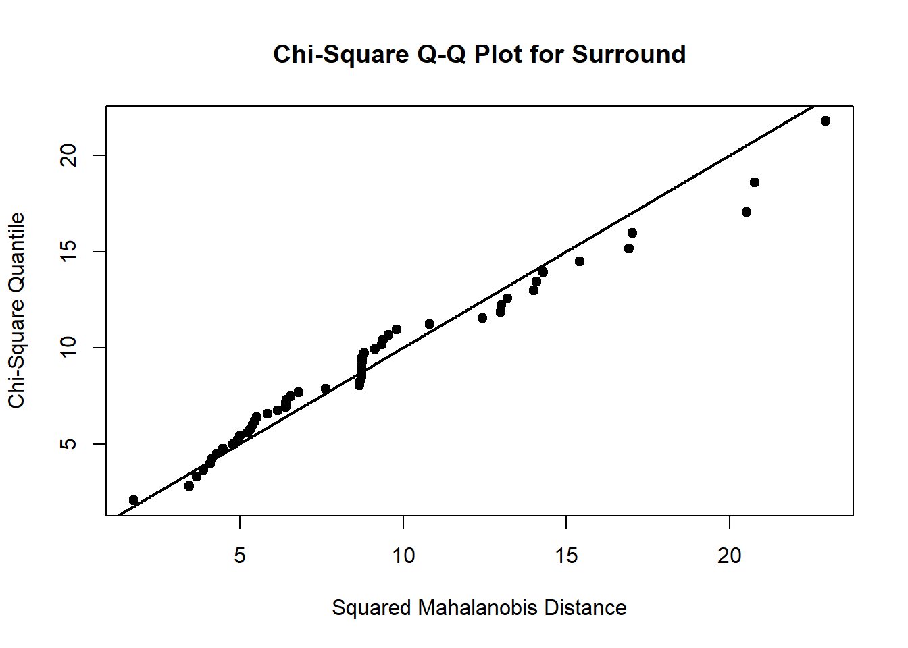
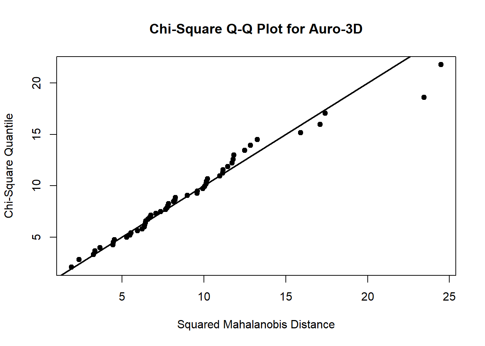
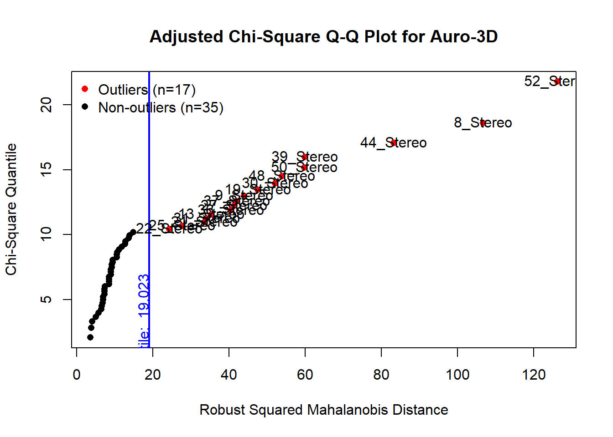
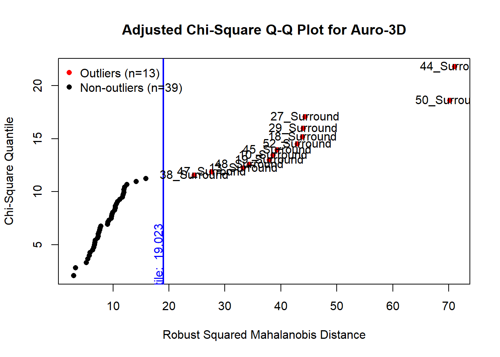
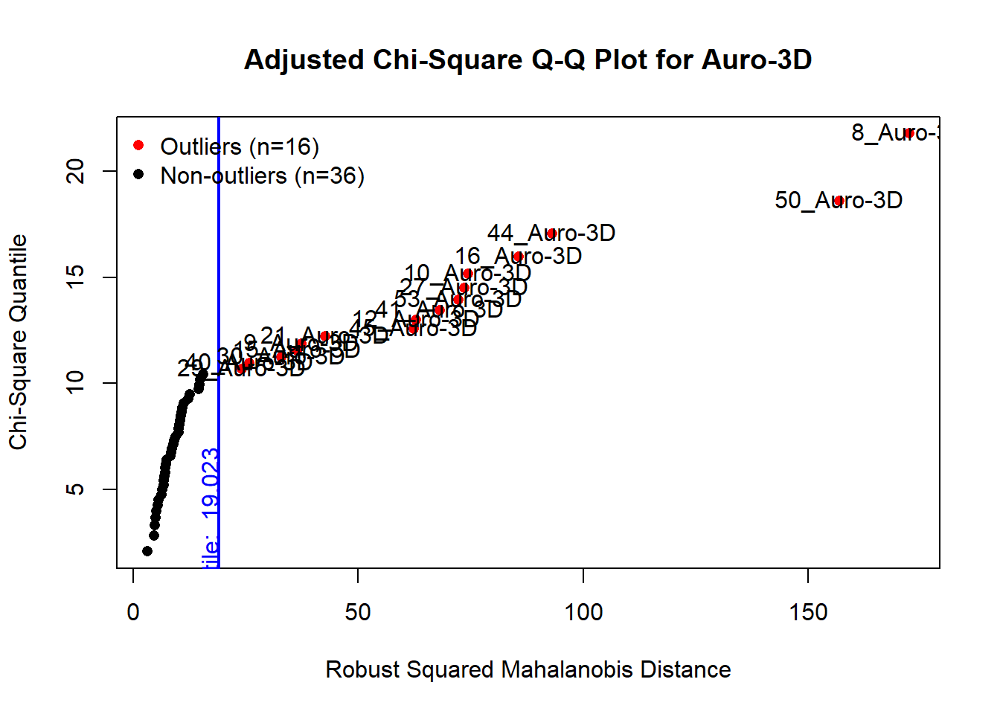
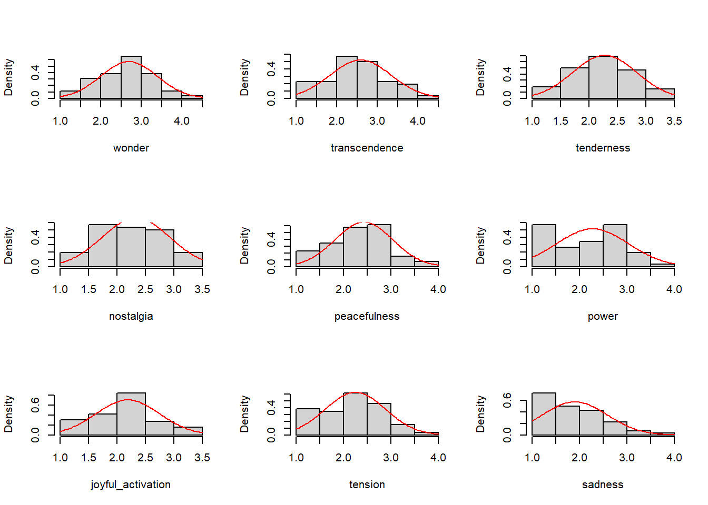
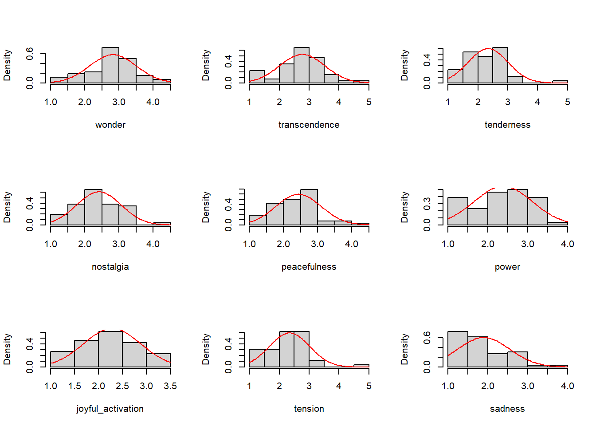
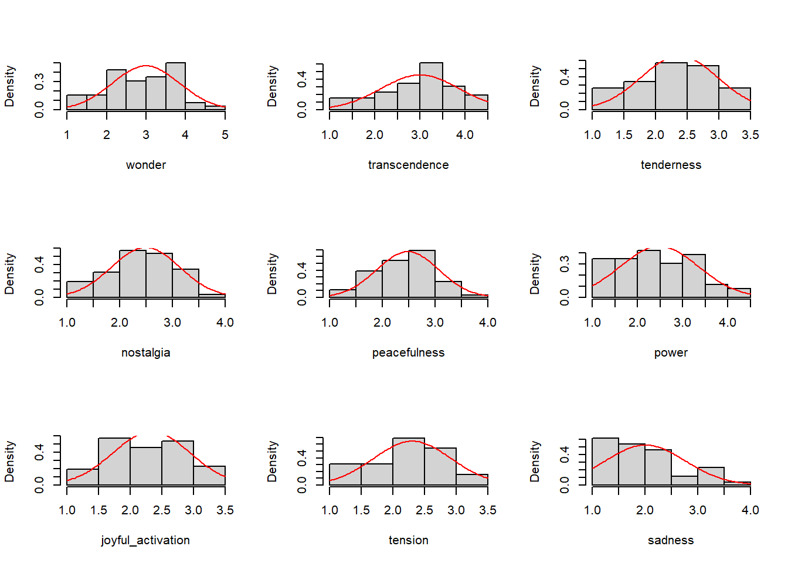

load("data/data_raw.Rda")Supplementary Materials: Added Emotional Value by Immersive 3D Audio? Reanalysis of Data From a Study by Hahn (2018) on the Emotional Effects of Music Presented in Various Audio Formats
Data set from Hahn (2018)
Preparation
Data, Packages, and Design
Load the data:
Load relevant packages:
# To identify multivariate outliers, a slightly modified version of MVN is required
#require(devtools)
#remotes::install_github("KilianSander/MVN")
sapply(c("tidyverse", "MVN", "MANOVA.RM", "rstatix", "ggpubr",
"afex", "emmeans", "ggbeeswarm", "pwr", "sjstats"),
require, character.only = T)
afex_options(emmeans_model = "univariate",
include_aov = TRUE)Prepare the design with vectors:
formats <- c("stereo", "surround", "auro")
gems_factors <- c("wonder", "transcendence", "tenderness", "nostalgia",
"peacefulness", "power", "joyful_activation", "tension",
"sadness")
# item to factor mapping
wonder <- c("moved", "filled_with_wonder", "allured")
transcendence <- c("feeling_of_transcendence", "fascinated", "overwhelmed")
tenderness <- c("affectionate", "tender", "mellowed")
nostalgia <- c("sentimental", "dreamy", "nostalgic")
peacefulness <- c("calm", "serene", "soothed")
power <- c("energetic", "triumphant", "strong")
joyful_activation <- c("joyful", "animated", "bouncy")
tension <- c("agitated", "nervous", "tense")
sadness <- c("sad", "sorrowful", "tearful")Filtering
Exclude a participant if there are at least two NAs for a GEMS factor of one stimulus:
data_raw$complete <- TRUE
for (p in data_raw$participant) {
part_data <- data_raw %>% filter(participant == p)
for (excerpt in c("a", "b")) {
for (format in formats) {
for (factor in gems_factors) {
temp_data <- part_data %>%
dplyr::select(starts_with(paste(excerpt, format, get(factor), sep = "_")))
nas <- temp_data %>% t() %>% is.na() %>% sum()
if (nas > 1) {
data_raw$complete[p] <- FALSE
}
}
}
}
}
rm(part_data, temp_data, nas, p, format, excerpt)
data_filtered <- data_raw %>% filter(complete)
N <- length(data_filtered$participant)After removing invalid cases the data set contains 52 participants.
Scoring
Calculate mean values for each item per format:
for (format in formats) {
for (factor in gems_factors) {
for (item in get(factor)) {
item_mean_vector <- data_filtered %>%
select(ends_with(paste0(format, "_", item))) %>%
rowMeans(na.rm = TRUE)
eval(str2expression(paste0("data_filtered$",
format, "_", item,
" <- item_mean_vector")))
}
}
}
rm(item, item_mean_vector)
data_filtered <- data_filtered %>% mutate_all(~ifelse(is.nan(.), NA, .))Calculate the mean of each factor per format across its items:
for (format in formats) {
for (factor in gems_factors) {
factor_mean_vector <- data_filtered %>%
select(paste0(format, "_", get(factor))) %>%
rowMeans(na.rm = TRUE)
eval(str2expression(paste0("data_filtered$",
format, "_", factor,
" <- factor_mean_vector")))
}
}
rm(format, factor, factor_mean_vector)Long Format
vars_vector <- sapply(formats,
function(format) {
paste0(format, "_", gems_factors)
},
USE.NAMES = F) %>% as.vector()
data_long_mult <- data_filtered %>% select(participant, all_of(vars_vector))
names(data_long_mult) <- names(data_long_mult) %>%
gsub("joyful_activation", "joyfulactivation", .)
data_long_mult <- data_long_mult %>%
pivot_longer(!participant,
names_to = c("format", ".value"),
names_pattern = "(.*)_(.*)")
data_long_single <- data_long_mult %>%
pivot_longer(!c(participant, format),
values_to = "score",
names_to = "factor") %>%
mutate(factor = recode(factor,
joyfulactivation = "joyful activation") %>%
tools::toTitleCase(),
format = format %>% tools::toTitleCase() %>%
recode(Auro = "Auro-3D") %>% as_factor())
names(data_long_mult) <- names(data_long_mult) %>%
gsub("joyfulactivation", "joyful_activation", .)
data_long_mult$format <- data_long_mult$format %>%
tools::toTitleCase() %>%
recode(Auro = "Auro-3D") %>%
as_factor()Analyses
Descriptives
Out of the 52 participants 17 indicated “female” as their gender whereas 35 indicated “male”. The participants’ age ranged from 15 to 69 with a mean of 30.1346154 (SD = 12.4601779).
load("data/sociodemographics.Rda")
sociodemographics_filtered <- sociodemographics %>%
filter(participant %in% data_filtered$participant)
music_prof <- sum(sociodemographics_filtered$music_related_profession_study)
classical_reg <- sociodemographics_filtered %>%
filter(classical_music == "regularly") %>% nrow()
classical_occ <- sociodemographics_filtered %>%
filter(classical_music == "occasionally") %>% nrow()
stim_familiar <-
sociodemographics_filtered$stimulus_familiarity %>% sum()
stim_familiar_well <-
sociodemographics_filtered$stimulus_familiarity_very_well %>% sum()
f3d <- sociodemographics_filtered %>%
filter(familiarity_3d_audio == "heard or read about it") %>% nrow()
f3dlisten <- sociodemographics_filtered %>%
filter(familiarity_3d_audio == "listened to music in 3d audio") %>% nrow()38 out of 52 participants (73.1%) reported a music-related profession or course of study.
sociodemographics_filtered %>% filter(music_related_profession_study) %>%
select(occupation) %>% table()occupation
musical acoustics musician service technician
1 14 1
teaching music and maths tonmeister tonmeister/acoustics
1 20 1 Most of the participants stated that they listened to classical music regularly (n = 30, 57.7%) or occasionally (n = 13, 25%). 33 participants (63.5%) were familiar with piece used as stimulus material and 7 (13.5%) of these reported knowing it very well. Regarding 3D audio, 19 participants (36.5%) indicated that they heard or read about it, and another 25 (48.1%) that they had already listened to music in a 3D audio format.
| GEMS Factor | Format | \(M\) | \(SD\) | 95% CI LL | 95% CI UL |
|---|---|---|---|---|---|
| Joyful Activation | Stereo | 2.189103 | 0.5649810 | 2.106536 | 2.271669 |
| Joyful Activation | Surround | 2.285256 | 0.5980511 | 2.204008 | 2.366505 |
| Joyful Activation | Auro-3D | 2.336539 | 0.6072281 | 2.251903 | 2.421174 |
| Nostalgia | Stereo | 2.333333 | 0.5977445 | 2.266834 | 2.399833 |
| Nostalgia | Surround | 2.410256 | 0.6538486 | 2.320266 | 2.500246 |
| Nostalgia | Auro-3D | 2.490385 | 0.6504678 | 2.393406 | 2.587363 |
| Peacefulness | Stereo | 2.429487 | 0.6133466 | 2.353158 | 2.505816 |
| Peacefulness | Surround | 2.439103 | 0.6658728 | 2.339427 | 2.538778 |
| Peacefulness | Auro-3D | 2.480769 | 0.5919337 | 2.399236 | 2.562303 |
| Power | Stereo | 2.272436 | 0.7691129 | 2.150486 | 2.394386 |
| Power | Surround | 2.384615 | 0.7302508 | 2.270818 | 2.498412 |
| Power | Auro-3D | 2.480769 | 0.8680067 | 2.369002 | 2.592536 |
| Sadness | Stereo | 1.897436 | 0.6932242 | 1.825362 | 1.969510 |
| Sadness | Surround | 1.894231 | 0.6584699 | 1.812069 | 1.976392 |
| Sadness | Auro-3D | 2.003205 | 0.7616133 | 1.908280 | 2.098130 |
| Tenderness | Stereo | 2.275641 | 0.5629101 | 2.188151 | 2.363131 |
| Tenderness | Surround | 2.336539 | 0.6695122 | 2.227299 | 2.445778 |
| Tenderness | Auro-3D | 2.375000 | 0.6039765 | 2.287610 | 2.462390 |
| Tension | Stereo | 2.248397 | 0.6396678 | 2.146288 | 2.350506 |
| Tension | Surround | 2.342949 | 0.6763299 | 2.209881 | 2.476017 |
| Tension | Auro-3D | 2.306090 | 0.6180653 | 2.209922 | 2.402258 |
| Transcendence | Stereo | 2.586539 | 0.7601817 | 2.459309 | 2.713768 |
| Transcendence | Surround | 2.769231 | 0.7577873 | 2.667924 | 2.870538 |
| Transcendence | Auro-3D | 3.000000 | 0.8769625 | 2.886651 | 3.113349 |
| Wonder | Stereo | 2.692308 | 0.6981025 | 2.550148 | 2.834467 |
| Wonder | Surround | 2.823718 | 0.6855285 | 2.707135 | 2.940301 |
| Wonder | Auro-3D | 2.996795 | 0.8565335 | 2.874316 | 3.119273 |

Multivariate Analysis of Variance
Check for Multivariate Normality and Outliers
mvn_test <- data_long_mult %>%
`class<-`("data.frame") %>%
`rownames<-`(str_c(.$participant, "_", .$format)) %>%
select(-participant) %>%
MVN::mvn(subset = "format",
mvnTest = "mardia",
univariatePlot = "histogram",
multivariatePlot = "qq",
multivariateOutlierMethod = "adj",
showOutliers = TRUE,
showNewData = TRUE)








(mv_normality <-
map_chr(1:3,
function(x) {
temp <- mvn_test[["multivariateNormality"]][[x]]
temp <- temp$Result[temp$Test == "MVN"]
temp
}) %>%
`names<-`(formats)) stereo surround auro
"NO" "YES" "NO" mv_outliers <-
map(1:3,
function(x) {
temp <- mvn_test[["multivariateOutliers"]][[x]][["Observation"]] %>%
gsub(".*?([0-9]+).*", "\\1", .) %>%
as.numeric()
}) %>%
unlist() %>%
unique() %>%
sort()According to Mardia’s test, multivariate normality is only present for surround sound. There are 29 participants who are multivariate outliers at least in one condition. Excluding these participants would shrink the sample to 44.2%. Therefore, a non-parametric MANOVA will be used.
Non-Parametric MANOVA
#rm_manova <-
# multRM(formula = cbind(wonder, transcendence, tenderness,
# nostalgia, peacefulness, power,
# joyful_activation, tension, sadness) ~ format,
# data = data_long_mult,
# subject = "participant",
# within = "format",
# para = TRUE,
# iter = 50000,
# dec = 5,
# seed = 987)
#save(rm_manova, file = "results/rm_manova.Rda")
load(file = "results/rm_manova.Rda")
summary(rm_manova)Call:
cbind(wonder, transcendence, tenderness, nostalgia, peacefulness,
power, joyful_activation, tension, sadness) ~ format
A multivariate repeated measures analysis with 1 within-subject factor(s) ( format )and 0 between-subject factor(s).
Descriptive:
format n wonder transcendence tenderness nostalgia peacefulness
1 stereo 52 2.69231 2.58654 2.27564 2.33333 2.42949
2 surround 52 2.82372 2.76923 2.33654 2.41026 2.43910
3 auro 52 2.99679 3.00000 2.37500 2.49038 2.48077
power joyful_activation tension sadness
1 2.27244 2.18910 2.24840 1.89744
2 2.38462 2.28526 2.34295 1.89423
3 2.48077 2.33654 2.30609 2.00321
Wald-Type Statistic (WTS):
Test statistic df p-value
format "40.78519" "18" "0.00163"
modified ANOVA-Type Statistic (MATS):
Test statistic
format 17.90262
p-values resampling:
paramBS (WTS) paramBS (MATS)
format "0.14638" "0.00386" Analysis of Variance for Transcendence
Assumption Checks
Extreme Outliers
data_long_mult %>% group_by(format) %>%
select(format, participant, transcendence) %>%
identify_outliers(transcendence) %>%
filter(is.outlier)# A tibble: 10 × 5
format participant transcendence is.outlier is.extreme
<fct> <int> <dbl> <lgl> <lgl>
1 Stereo 1 1.33 TRUE FALSE
2 Stereo 6 1.17 TRUE FALSE
3 Stereo 8 4.17 TRUE FALSE
4 Stereo 11 1 TRUE FALSE
5 Stereo 43 1 TRUE FALSE
6 Surround 6 1.17 TRUE FALSE
7 Surround 11 1.17 TRUE FALSE
8 Surround 43 1.33 TRUE FALSE
9 Surround 47 4.67 TRUE FALSE
10 Surround 48 1.17 TRUE FALSE ggboxplot(data_long_mult, x = "format", y = "transcendence", add = "point")
Normality: Shapiro-Wilk Test and QQ-Plots
| Version | Test Statistic | \(p\) |
|---|---|---|
| Stereo | 0.9719007 | 0.2539826 |
| Surround | 0.9624311 | 0.0997768 |
| Auro-3D | 0.9670579 | 0.1581975 |

Mauchly’s Test for Sphericity
transcendence_anova <-
anova_test(data = data_long_mult,
dv = transcendence,
wid = participant,
within = format,
type = 3,
effect.size = "pes")
transcendence_ges <- anova_test(data = data_long_mult,
dv = transcendence,
wid = participant,
within = format,
type = 3,
effect.size = "ges")$ANOVA$ges
transcendence_anova$`Mauchly's Test for Sphericity` %>%
knitr::kable(col.names = c("Effect", "$W$", "$p$", "$p<.05$"),
align = "lccc")| Effect | \(W\) | \(p\) | \(p<.05\) |
|---|---|---|---|
| format | 0.931 | 0.169 |
Results
| Effect | DFn | DFd | \(F\) | \(p\) | \(\eta^2_p\) | \(\eta^2_G\) |
|---|---|---|---|---|---|---|
| format | 2 | 102 | 13.209 | 7.9e-06 | 0.206 | 0.044 |
transcendence_anova_afex <-
aov_car(transcendence ~ format + Error(participant/format),
data_long_mult,
include_aov = TRUE,
emmeans_model = "univariate")
transcendence_anova_afex$aov %>% sjstats::anova_stats()stratum | term | df | sumsq | meansq | statistic | p.value | etasq | partial.etasq | omegasq | partial.omegasq | epsilonsq | cohens.f | power
---------------------------------------------------------------------------------------------------------------------------------------------------------------
participant | Residuals | 51 | 80.741 | 1.583 | | | 0.788 | 0.824 | 0.703 | 0.732 | 0.704 | 2.164 | 1.000
participant:format | format | 2 | 4.465 | 2.232 | 13.209 | < .001 | 0.044 | 0.206 | 0.040 | 0.135 | 0.040 | 0.509 | 0.998
participant:format | Residuals | 102 | 17.239 | 0.169 | | | | | | | | | afex_plot(transcendence_anova_afex,
x = "format",
data_plot = FALSE,
error = "within",
error_ci = TRUE,
error_level = .95,
error_arg = list(width = .1),
emmeans_arg = list(model = "univariate")) +
ylim(2.4, 3.2) +
ylab("Transcendence") +
scale_x_discrete(name = "Format",
labels = c("stereo" = "Stereo",
"surround" = "Surround",
"auro" = "Auro-3D")) +
theme_pubr()
contrast(emmeans(transcendence_anova_afex,
~ format),
method = "revpairwise", adjust = "holm") %>%
knitr::kable(col.names = c("Contrast", "Mean Difference",
"$SE$", "df", "$t$", "$p$"))| Contrast | Mean Difference | \(SE\) | df | \(t\) | \(p\) |
|---|---|---|---|---|---|
| Surround - Stereo | 0.1826923 | 0.0806248 | 102 | 2.265956 | 0.0255664 |
| Auro.3D - Stereo | 0.4134615 | 0.0806248 | 102 | 5.128216 | 0.0000042 |
| Auro.3D - Surround | 0.2307692 | 0.0806248 | 102 | 2.862260 | 0.0102100 |
Effect Sizes for Contrasts
Calculate correlations:
cor_stereo_surround <-
cor.test(data_filtered$stereo_transcendence,
data_filtered$surround_transcendence,
alternative = "greater",
method = "pearson",
conf.level = .95)
cor_stereo_auro <-
cor.test(data_filtered$stereo_transcendence,
data_filtered$auro_transcendence,
alternative = "greater",
method = "pearson",
conf.level = .95)
cor_surround_auro <-
cor.test(data_filtered$surround_transcendence,
data_filtered$auro_transcendence,
alternative = "greater",
method = "pearson",
conf.level = .95)
cor_table <- data.frame(Formats = c("Stereo -- Surround",
"Stereo -- Auro-3D",
"Surround -- Auro-3D"),
r = c(cor_stereo_surround$estimate,
cor_stereo_auro$estimate,
cor_surround_auro$estimate),
p = c(cor_stereo_surround$p.value,
cor_stereo_auro$p.value,
cor_surround_auro$p.value),
LL = c(cor_stereo_surround$conf.int[1],
cor_stereo_auro$conf.int[1],
cor_surround_auro$conf.int[1]),
UL = c(cor_stereo_surround$conf.int[2],
cor_stereo_auro$conf.int[2],
cor_surround_auro$conf.int[2])) %>%
mutate(`Fisher's z` = atanh(r),
p = sapply(p,
function(x) ifelse(x < 10^-3, "< .001", x)))Lakens (2013) provides an overview of different effect sizes. We use \(d_Z\), \(d_{av}\), \(d_{rm}\), \(g_{av}\), and \(g_{rm}\), which are variants of Cohen’s \(d\) and Hedges \(g\), and the Common Language Effect Size (CLE, McGraw & Wong, 1992). The CLE expresses “the probability that an individual has a higher value on one measurement than the other” (Lakens, 2013, p. 4). The CLE is therefore the probability that a \(Z\)-score is greater than a specific \(Z_{\textrm{CLE}}\) (given a standard normal distribution). For repeated measures the \(Z_{\textrm{CLE}}\) is calculated from the means and standard deviations from two measurements as well as their correlation (McGraw & Wong, 1992): \[ Z_{\textrm{CLE}} = \frac{M_2 - M_1}{\sqrt{SD_1^2+SD_2^2-2\cdot{}SD_1\cdot{}SD_2\cdot{}r_{12}}} \]
get_d_Z <- function(mean_diff, sd_diff) {
d_Z <- mean_diff / sd_diff
d_Z
}
get_d_av <- function(mean_diff, sd1, sd2) {
d_av <- mean_diff / ((sd1 + sd2) / 2)
d_av
}
get_s_diff <- function(sd1, sd2, cor12) {
s_diff <- sqrt(sd1^2 + sd2^2 - 2 * cor12 * sd1 * sd2)
s_diff
}
get_d_rm <- function(mean_diff, sd1, sd2, cor12) {
s_diff <- get_s_diff(sd1 = sd1, sd2 = sd2, cor12 = cor12)
d_rm <- mean_diff / s_diff * sqrt(2 * (1 - cor12))
d_rm
}
correct_d_to_g <- function(d, N) {
g <- d * (1 - (3 / (8 * N - 9)))
g
}
get_cle <- function(mean1, mean2, sd1, sd2, cor12) {
Z_cle <- (mean2 - mean1) / get_s_diff(sd1 = sd1, sd2 = sd2, cor12 = cor12)
Z_cle %>% pnorm(lower.tail = F)
}transcendence_differences <- data_long_single %>%
filter(factor == "Transcendence") %>%
mutate(format = format %>% tolower() %>%
gsub("auro-3d", "auro", .),
factor = factor %>% tolower()) %>%
pivot_wider(id_cols = participant,
values_from = score,
names_from = c(format, factor),
names_sep = "_") %>%
mutate(diff_stereo_surround = surround_transcendence - stereo_transcendence,
diff_stereo_auro = auro_transcendence - stereo_transcendence,
diff_surround_auro = auro_transcendence - surround_transcendence)
transcendence_effsizes <- transcendence_differences %>%
select(participant, starts_with("diff")) %>%
pivot_longer(starts_with("diff"),
names_to = "contrast",
values_to = "diff",
names_prefix = "diff_") %>%
group_by(contrast) %>%
summarise(mean_diff = mean(diff),
sd_diff = sd(diff)) %>%
mutate(format1 = str_split(contrast, "_") %>%
lapply(function(x) x[[1]]) %>% unlist,
format2 = str_split(contrast, "_") %>%
lapply(function(x) x[[2]]) %>% unlist) %>%
mutate(cohens_d_Z = get_d_Z(mean_diff = mean_diff, sd_diff = sd_diff),
cohens_d_av = sapply(1:length(.$format1),
function(x) {
f1 <- format1[[x]]
f2 <- format2[[x]]
get_d_av(mean_diff = mean_diff[[x]],
sd1 = sd(transcendence_differences[[
str_c(f1, "_transcendence")]]),
sd2 = sd(transcendence_differences[[
str_c(f2, "_transcendence")]]))
}),
cohens_d_rm = sapply(1:length(.$format1),
function(x) {
f1 <- format1[[x]]
f2 <- format2[[x]]
cor_str <-
str_c(f1, " -- ", ifelse(f2 == "auro",
"Auro-3D", f2)) %>%
tools::toTitleCase()
get_d_rm(mean_diff = mean_diff[[x]],
sd1 = sd(transcendence_differences[[
str_c(f1, "_transcendence")]]),
sd2 = sd(transcendence_differences[[
str_c(f2, "_transcendence")]]),
cor12 = cor_table$r[
cor_table$Formats == cor_str])
}),
hedges_g_av = correct_d_to_g(cohens_d_av, N),
hedges_g_rm = correct_d_to_g(cohens_d_rm, N),
cle = sapply(1:length(.$format1),
function(x) {
f2 <- format1[[x]]
f1 <- format2[[x]]
cor_str <-
str_c(f2, " -- ", ifelse(f1 == "auro",
"Auro-3D", f1)) %>%
tools::toTitleCase()
mean1 <- mean(transcendence_differences[[
str_c(f1, "_transcendence")]])
mean2 <- mean(transcendence_differences[[
str_c(f2, "_transcendence")]])
sd1 <- sd(transcendence_differences[[
str_c(f1, "_transcendence")]])
sd2 <- sd(transcendence_differences[[
str_c(f2, "_transcendence")]])
cor12 <- cor_table$r[cor_table$Formats == cor_str]
get_cle(mean1 = mean1, mean2 = mean2,
sd1 = sd1, sd2 = sd2, cor12 = cor12)
}))
transcendence_effsizes %>%
mutate(contrast = str_c(format1, " -- ", format2) %>%
gsub("auro", "Auro-3D", .) %>%
tools::toTitleCase()) %>%
select(-c(format1, format2, ends_with("_diff"))) %>%
knitr::kable(col.names = c("Contrast", "$d_Z$", "$d_{av}$", "$d_{rm}$",
"$g_{av}$", "$g_{rm}$", "CLE"),
align = "lcccccc")| Contrast | \(d_Z\) | \(d_{av}\) | \(d_{rm}\) | \(g_{av}\) | \(g_{rm}\) | CLE |
|---|---|---|---|---|---|---|
| Stereo – Auro-3D | 0.6447681 | 0.5051009 | 0.4979229 | 0.5013778 | 0.4942527 | 0.7404612 |
| Stereo – Surround | 0.3112574 | 0.2407062 | 0.2407045 | 0.2389320 | 0.2389303 | 0.6221975 |
| Surround – Auro-3D | 0.4540296 | 0.2823297 | 0.2751914 | 0.2802487 | 0.2731629 | 0.6750962 |
Using the correction formula for multiple groups from McGraw & Wong (1992), the CLE for higher values in Auro than in Stereo and Surround is:
p_auro <- .88 *
prod(transcendence_effsizes$cle[transcendence_effsizes$format2 == "auro"]) +
.11
p_auro[1] 0.5498967Thus, the probability that a random participant scored higher in Auro-3D than in Stereo and Surround is 54.99%.
Correlations
Warning: There was 1 warning in `mutate()`.
ℹ In argument: `across(where(is.numeric), round, digits = 4)`.
Caused by warning:
! The `...` argument of `across()` is deprecated as of dplyr 1.1.0.
Supply arguments directly to `.fns` through an anonymous function instead.
# Previously
across(a:b, mean, na.rm = TRUE)
# Now
across(a:b, \(x) mean(x, na.rm = TRUE))| Formats | \(r\) | \(p\) | CI LL | CI UL | Fisher’s \(z\) |
|---|---|---|---|---|---|
| Stereo – Surround | 0.7010 | < .001 | 0.5610 | 1 | 0.8692 |
| Stereo – Auro-3D | 0.7018 | < .001 | 0.5621 | 1 | 0.8709 |
| Surround – Auro-3D | 0.8163 | < .001 | 0.7215 | 1 | 1.1457 |
To get a mean correlation, individual correlation coefficients have to be Fisher \(z\)-transformed (Corey et al., 1998). The Fisher \(z\)-transformation is equivalent to the inverse hyperbolic tangent.
avg_cor_z <- mean(cor_table$`Fisher's z`)
avg_cor_r <- tanh(avg_cor_z)Taking the averaged Fisher \(z\)-transformed values results in a value of 0.9619. Back-transformed to Person’s \(r\) the average correlation between the three audio formats for the GEMS factor Transcendence is 0.7451.
Data set from Wycisk et al. (2022)
Preparation
Load the outlier-adjusted data from Wycisk et al. (2022) containing N = 190 participants. Then calculate the IMEI score, i.e., the average of the ten items, as well as the mean IMEI score per audio format.
imei_data <- read.csv("data/imei_data_outlier_adjusted.csv")
imei_items <- paste0("imei", c(15,8,12,21,19,6,11,5,7,4))
imei_data_long <- imei_data %>% select(participant, piece,
version, all_of(imei_items)) %>%
mutate(piece = piece %>% recode("1" = "radio", "2" = "hantel",
"3" = "jene", "4" = "rokoko"),
version = version %>% recode("1" = "mono", "2" = "stereo",
"3" = "3d") %>% as_factor())
imei_data_long$imei <- imei_data_long %>%
select(all_of(imei_items)) %>% rowMeans()
imei_data_wide <- imei_data_long %>%
pivot_wider(id_cols = participant,
names_from = c(piece, version),
values_from = imei,
names_glue = "{piece}_{version}_imei")
for (v in c("mono", "stereo", "3d")) {
temp <- imei_data_wide %>% select(contains(v)) %>% rowMeans()
eval(str2expression(paste0("imei_data_wide$mean_", v, "_imei <- temp")))
}
rm(temp, v)IMEI Correlations Across Audio Formats
imei_cor_mono_stereo <-
cor.test(imei_data_wide$mean_mono_imei, imei_data_wide$mean_stereo_imei,
alternative = "greater",
method = "pearson",
conf.level = .95)
imei_cor_mono_3d <-
cor.test(imei_data_wide$mean_mono_imei, imei_data_wide$mean_3d_imei,
alternative = "greater",
method = "pearson",
conf.level = .95)
imei_cor_stereo_3d <-
cor.test(imei_data_wide$mean_stereo_imei, imei_data_wide$mean_3d_imei,
alternative = "greater",
method = "pearson",
conf.level = .95)
imei_cor_table <- data.frame(Formats = c("Mono -- Stereo",
"Mono -- 3D",
"Stereo -- 3D"),
r = c(imei_cor_mono_stereo$estimate,
imei_cor_mono_3d$estimate,
imei_cor_stereo_3d$estimate),
p = c(imei_cor_mono_stereo$p.value,
imei_cor_mono_3d$p.value,
imei_cor_stereo_3d$p.value),
LL = c(imei_cor_mono_stereo$conf.int[1],
imei_cor_mono_3d$conf.int[1],
imei_cor_stereo_3d$conf.int[1]),
UL = c(imei_cor_mono_stereo$conf.int[2],
imei_cor_mono_3d$conf.int[2],
imei_cor_stereo_3d$conf.int[2])) %>%
mutate(`Fisher's z` = atanh(r),
p = sapply(p,
function(x) ifelse(x < 10^-3, "< .001", x))) %>%
add_row(Formats = "Average",
r = mean(.$r),
`Fisher's z` = mean(.$`Fisher's z`)) %>%
add_row(Formats = "Back-transformed Fisher's $z$ average",
r = tanh(.$`Fisher's z`[.$Formats == "Average"]))| \(r\) | \(p\) | CI LL | CI UL | Fisher’s \(z\) | |
|---|---|---|---|---|---|
| Mono – Stereo | 0.7886444 | < .001 | 0.7386729 | 1 | 1.0678358 |
| Mono – 3D | 0.6753984 | < .001 | 0.6045710 | 1 | 0.8206039 |
| Stereo – 3D | 0.8731923 | < .001 | 0.8414386 | 1 | 1.3463639 |
| Average | 0.7790784 | 1.0782678 | |||
| Back-transformed Fisher’s \(z\) average | 0.7925559 |
IMEI Common Language Effect Sizes
imei_desc <- imei_data_long %>%
select(participant, piece, version, imei) %>%
mutate(version = version %>% as_factor() %>%
recode_factor(mono = "Mono",
stereo = "Stereo",
`3d` = "3D")) %>%
group_by(participant, version) %>%
summarise(imei = mean(imei)) %>%
group_by(version) %>%
summarise(M = mean(imei), SD = sd(imei))
imei_cle_table <- data.frame(format1 = c("3D", "3D", "Stereo"),
format2 = c("Stereo", "Mono", "Mono"))
imei_cle_table$cle <-
mapply(function(f1, f2) {
mean1 <- imei_desc$M[imei_desc$version == f1]
mean2 <- imei_desc$M[imei_desc$version == f2]
sd1 <- imei_desc$SD[imei_desc$version == f1]
sd2 <- imei_desc$SD[imei_desc$version == f2]
cor12 <- imei_cor_table$r[imei_cor_table$Formats == str_c(f2, " -- ", f1)]
get_cle(mean1 = mean1,
mean2 = mean2,
sd1 = sd1,
sd2 = sd2,
cor12 = cor12)
}, imei_cle_table$format1, imei_cle_table$format2)
imei_cle_table %>%
mutate(across(where(is.numeric), round, digits = 4)) %>%
knitr::kable(col.names = c("Format 1", "Format 2", "CLE"),
align = "llc")| Format 1 | Format 2 | CLE |
|---|---|---|
| 3D | Stereo | 0.5861 |
| 3D | Mono | 0.7705 |
| Stereo | Mono | 0.7818 |
p_3d <- .88 * prod(imei_cle_table$cle[imei_cle_table$format1 == "3D"]) + .11Once again using the correction formula for multiple conditions from McGraw & Wong (1992), the CLE for 3D versus Stereo and Mono is 0.5073903.
References
Corey, D. M., Dunlap, W. P., & Burke, M. J. (1998). Averaging correlations: Expected values and bias in combined pearson rs and Fisher’s z transformations. The Journal of General Psychology, 125(3), 245–261. https://doi.org/10.1080/00221309809595548
Cousineau, D., & O’Brien, F. (2014). Error bars in within-subject designs: A comment on Baguley (2012). Behavior Research Methods, 46(4), 1149–1151. https://doi.org/10.3758/s13428-013-0441-z
Hahn, E. (2018). Musical emotions evoked by 3D audio. Conference paper. AES conference on spatial reproduction. http://www.aes.org/e-lib/browse.cfm?elib=19640
Lakens, D. (2013). Calculating and reporting effect sizes to facilitate cumulative science: A practical primer for t-tests and ANOVAs. Frontiers in Psychology, 4. https://doi.org/10.3389/fpsyg.2013.00863
McGraw, K. O., & Wong, S. P. (1992). A common language effect size statistic. Psychological Bulletin, 111(2), 361–365. https://doi.org/10.1037/0033-2909.111.2.361
Wycisk, Y., Sander, K., Kopiez, R., Platz, F., Preihs, S., & Peissig, J. (2022). Wrapped into sound: Development of the immersive music experience inventory (IMEI). Frontiers in Psychology. https://doi.org/10.3389/fpsyg.2022.951161